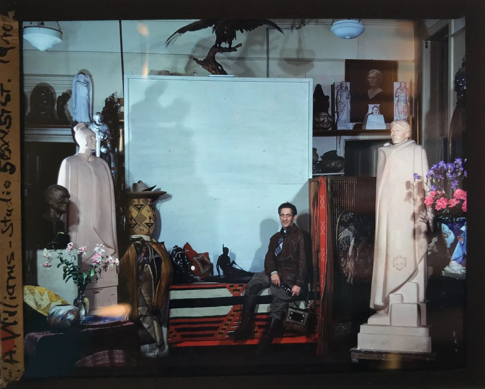
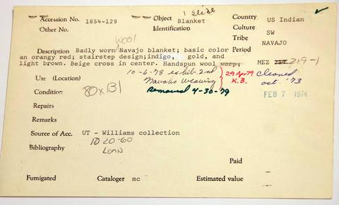
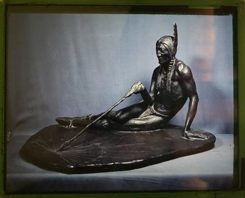

One collection, two archives.
In 1940 the sculptor Frederic Allen Williams sat for a portrait in his New York studio on a Diné Chief blanket. His textiles later went to the Texas Memorial Museum and the Department of Art and Art History. His photographs and lantern slides went to the Harry Ransom Center. This site brings them back together.
It joins the 2018 Woven into History archive of Navajo textiles with Williams's slides and ephemera at the Ransom Center, and follows the collection along three paths.

Three paths through the collection

ProvenanceHow the collection came apart
The Deed of Trust, the 1969 accession record, catalog cards, and the essay that first matched a photograph to a blanket. 8 record groups · 16 dated events Textiles
TextilesNavajo weaving, 1860s–1950s
Chief blankets, saddle blankets, a shawl, rugs and samplers, with documentation photographs, details and in-person photographs. 17 textiles · 87 images
PhotographyWilliams's lantern slides
Slides of his sculpture, of Williams himself, of Taos and Red River, and his lecture brochures, from the Harry Ransom Center. 46 items · 3 introductions by Jesse RitnerArchive one
Woven into History
A public and digital history project begun in 2018 in Dr. Joan Neuberger's graduate course at UT Austin. Textiles photographed for the Art and Art History Visual Resources Collection (DASe), with the paper records that came with them.
Department of Art and Art History · accession groups 2148, 1654, 1074, 1633
Archive two
Frederic Allen Williams Collection
Williams's own lantern slides and photographs: records of his sculpture, portraits of himself in costume, Taos scenes, and the brochures for his lectures on the "Arts of the Americas."
Harry Ransom Center · Lantern Slide Collection series I and III; Photograph Collection series III
About the images
This collection was assembled by a non-Native collector. 18 of the photographs show Taos Pueblo people and places, a dance, or Williams dressed as Native and Mexican people. They are marked for community review and carry context on their pages. See cultural protocols.